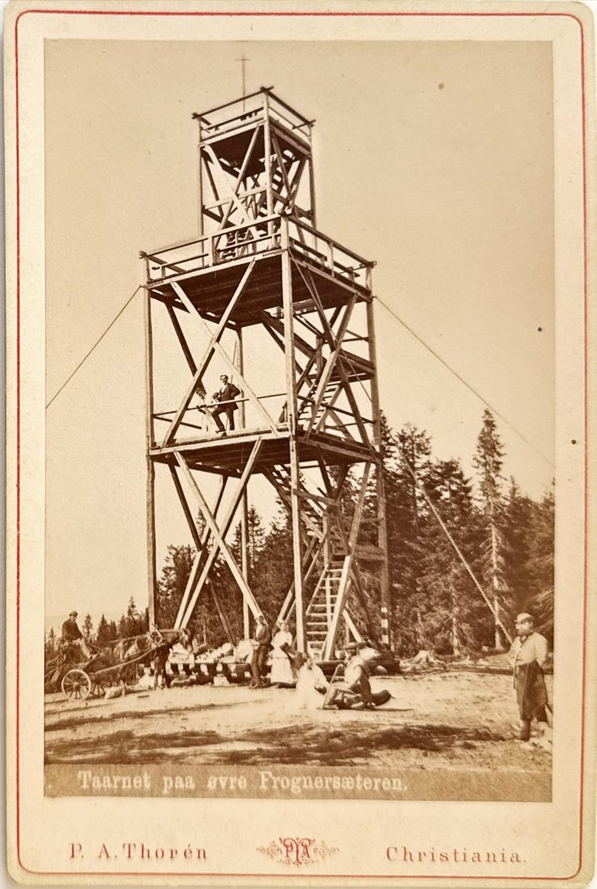

Fotografi · 1878
Øvre Frognersæteren
- Type
- Fotografi
- År
- 1878
- Utgiver
- Fotografiske Atelier. P.A. Thorén
- Steder
- Nordmarka, Øvre Frognersæteren, Taarnet
- Format
- 9,5 x 15,5 cm
- Med kartong
- 10,5 x 16,5 cm